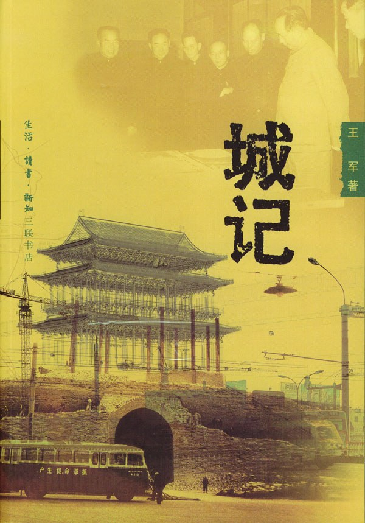

《城记》

总体观点
新华社高级记者王军历时十年查阅大量绝密解密档案并深度访谈数十位当事人，完整还原了建国后北京古城规划与拆毁的历史悲剧全景。
核心命题：北京古城墙与传统风貌的消逝不是技术落后的意外，而是苏联单一中心模式的强势移入、急功近利的政治意识形态干预与漠视城市科学规律的必然代价。
梁思成、陈占祥提出的“梁陈方案”所倡导的新旧分立、保护历史文脉与有机疏散思想，至今仍是中国乃至世界城市规划最深刻的警世钟。
核心观点
-
1. 城市规划是不可逆的科学，违背自然与历史规律必遭严厉报复
城市是复杂的生命有机体，盲目摧毁历史文脉与空间肌理，不仅湮灭文化瑰宝，更会埋下难以医治的城市病病根。
建国初期否定新旧分立，强行在老城摊大饼发展，直接导致半个世纪后北京中心城区陷入不可自拔的大拥堵与环境过载。 -
2. “梁陈方案”的新旧分立构想是中国现代城市规划的最高远见
梁思成与陈占祥建议将中央行政中心放在西郊月坛以西，完整保留旧城作为文化遗产，兼顾现代行政与古都保护。
梁陈方案手绘总图详细论证了西郊新行政区拥有充裕的现代化发展腹地，且征地拆迁成本极低，既省经费又保文物。 -
3. 苏联专家单一中心模式的机械照搬是导致旧城悲剧的制度主因
以阿布拉莫夫为首的苏联市政专家强力否定新旧分立，定调以天安门为中心进行旧城改造，强行植入重工业与行政大院。
苏联专家认定“分散主义是资产阶级理念”，主张将行政办公大楼直接塞入老皇城内部，开辟百米宽的笔直大道。 -
4. 古城墙并非阻碍发展的瓦砾，而是能够改造为世界级环城公园的珍宝
梁思成积极倡导将明代城墙顶部绿化为全世界独一无二的立体环城空中公园，市民可在城墙上散步品茶俯瞰古都美景。
梁思成撰文绘制彩色草图：城墙顶部铺设林荫道与草坪，城楼角楼辟为博物馆，护城河划船垂钓，化军事工事为公共绿肺。 -
5. 拆除真古董再造假古董是历史文化遗产保护中最荒谬的轮回
当真正承载数百年历史信息的城门城楼被当成砖石原料拆毁后，后人再耗费巨资复建的仿古建筑永远失去了历史灵魂。
林徽因在病榻上怒斥主张拆门的北京市副市长吴晗：“你们现在拆的是真古董，以后迟早要后悔造假古董！”一语成谶。 -
6. 封闭式部委大院割裂了传统城市的微循环肌理
大量行政机关在老城圈占地盘自成体系，截断胡同街巷网络，破坏了原本有机连通的公共生活与交通循环。
旧城内高耸的机关围墙将连续的传统街巷切成断头路，市民原本步行几分钟的路程被迫绕行主干道，加剧道路拥挤。 -
7. 政治批判扼杀学术争鸣让中国城市规划失去了纠错机会
将严肃的规划学术分歧上升为阶级立场斗争，导致科学理性的声音彻底失语，使激进决策畅通无阻走向极端。
反右运动中陈占祥被打成右派发配劳改，梁思成被迫在报纸上公开检讨，“梁陈方案”被扣上反动资产阶级帽子封存数十年。
全书结构
-
1 古都求衡
记录1949年北平和平解放后新政权定都北京初期，面对破旧古都功能重构与古建筑去留的最初探索与争论。
新政权面临现代行政机构驻扎与旧城保护的现实冲突，彭真与各界学者就“改造北京还是保留古都”展开首轮交锋。 -
2 营城之论
探讨古都历史文化价值评估，反思“把消费城市变成生产城市”的工业化导向对城市定位的颠覆。
苏联专家建议在古都发展重工业，与梁思成希望北京保留纯粹政治与文化中心地位的构想背道而驰。 -
3 梁陈方案
详述梁思成与陈占祥提出在西郊三里河建设新行政中心、完整保留旧城作为文化古都的万言规划方案。
梁陈方案手绘总图建议将中共中央与政务院安置在西郊公主坟一带，避免在老城开肠破肚，实现新旧分立并存。 -
4 讼议纷起
记录梁陈方案遭遇苏联专家强力否决与城墙存废大讨论，梁思成提出城墙绿化为立体环城公园的抗争。
梁思成撰文描绘市民可在明代城墙上漫步、喝茶、休憩的环城立体公园蓝图，却被批评为主观唯心与浪费土地。 -
5 “大屋顶”辩
回顾建国初期建筑界推广“民族形式”大屋顶的浪潮，以及随之而来的反浪费、反形式主义批判风暴。
建筑大师张开济设计的百万庄住宅区与地质部大楼因采用古典重檐大屋顶，在政治批判浪潮中被迫作两次深刻检讨。 -
6 哲匠之惑
讲述天安门广场改造过程中，长安左门与长安右门等标志性明代古建因妨碍交通被拆除的历史悲剧。
林徽因在病榻上怒斥主张拆门的北京市副市长吴晗：“你们现在拆的是真古董，以后迟早要后悔造假古董！” -
7 书生意气
记录1957年反右斗争中梁思成、陈占祥等建筑规划学家因坚持科学规划主张而遭到的严厉政治批判。
陈占祥被打成右派发配劳动改造，梁思成被迫在报刊上违心自我检查，中国科学城市规划体系遭遇灭顶之灾。 -
8 蓝图初展
展现以旧城为中心的单一中心规划格局正式确立，城墙开始大批拆除，行政机关强行塞入老城大院。
故宫差点被拆除改建为现代办公综合体，旧城内挤满部委大院，城市功能混杂导致交通与环境负荷急剧激化。 -
9 新旧决裂
记录1960年代修筑地铁与环路战备工程中内外城墙被彻底推倒碾碎，古都城郭体系走向彻底消失。
推土机轰鸣声中，屹立五百年的西直门、崇文门城楼化为废墟砖石，梁思成绝望悲叹：“拆掉一座城楼，像挖掉我的一块肉！” -
10 余音难逝
反思世纪之交北京严重城市病与对梁思成学术遗产的迟来忏悔，呼唤科学城市规划与历史文脉敬畏。
半个世纪后北京遭遇严重雾霾、水资源匮乏与二环大拥堵，城市总体规划不得不提出“通州副中心”与疏解中心城区，重归梁思成当年的预见。